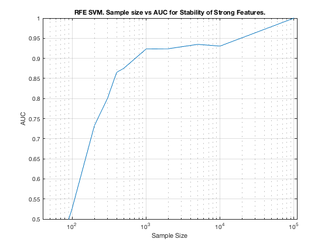

TieNet. Summary. RFE.
summary_stability_type("TieNet", 2)
TOTAL COUNTS: Strong:=23, Weak=26, Irrelevant=4
Figure 13. RFE SVM. Sample size vs AUC for Stability of Strong Features.
_________________________________________________________________________

Table 13. Breakdown of Stability by Feature Type. RFE SVM,
___________________________________________________________
(1) Number Features Repeat : number of unique features that were selected in a repeat
(2) Number Features Fold : number of unique features that were selected in a fold
(3) Feature Stability ~ Feature Selection Frequency
Sample_Size ALL__Number_Features_Repeat ALL__Number_Features_Fold ALL__Stability
___________ ___________________________ _________________________ ___________________
' 50 ' ' 10.6 +/- 5.3 ' ' 2.3 +/- 0.6 ' ' 0.043 +/- 0.042 '
' 100 ' ' 9.6 +/- 5.5 ' ' 2.3 +/- 0.6 ' ' 0.043 +/- 0.064 '
' 200 ' ' 12.6 +/- 11.5 ' ' 2.9 +/- 1.6 ' ' 0.054 +/- 0.097 '
' 300 ' ' 12.4 +/- 11.4 ' ' 3.1 +/- 2.0 ' ' 0.058 +/- 0.104 '
' 400 ' ' 15.9 +/- 14.3 ' ' 4.0 +/- 3.3 ' ' 0.075 +/- 0.091 '
' 500 ' ' 17.2 +/- 15.3 ' ' 4.1 +/- 2.8 ' ' 0.077 +/- 0.107 '
' 1000 ' ' 33.8 +/- 17.0 ' ' 8.8 +/- 4.9 ' ' 0.165 +/- 0.110 '
' 2000 ' ' 38.4 +/- 13.8 ' ' 11.3 +/- 5.6 ' ' 0.214 +/- 0.130 '
' 5000 ' ' 48.2 +/- 7.3 ' ' 20.7 +/- 4.4 ' ' 0.391 +/- 0.197 '
' 10000 ' ' 48.6 +/- 6.9 ' ' 28.1 +/- 4.5 ' ' 0.530 +/- 0.288 '
' 100000 ' ' 44.0 +/- 9.9 ' ' 28.9 +/- 2.1 ' ' 0.545 +/- 0.411 '
Sample_Size STRG_Number_Features_Repeat STRG_Number_Features_Fold STRG_Stability
___________ ___________________________ _________________________ ___________________
' 50 ' ' 4.8 +/- 2.7 ' ' 1.1 +/- 0.6 ' ' 0.047 +/- 0.058 '
' 100 ' ' 5.4 +/- 2.3 ' ' 1.5 +/- 0.5 ' ' 0.064 +/- 0.091 '
' 200 ' ' 7.0 +/- 4.7 ' ' 2.0 +/- 0.6 ' ' 0.087 +/- 0.139 '
' 300 ' ' 7.4 +/- 5.4 ' ' 2.2 +/- 0.9 ' ' 0.097 +/- 0.149 '
' 400 ' ' 8.4 +/- 6.4 ' ' 2.6 +/- 1.5 ' ' 0.115 +/- 0.126 '
' 500 ' ' 9.2 +/- 7.1 ' ' 2.8 +/- 1.4 ' ' 0.122 +/- 0.151 '
' 1000 ' ' 16.6 +/- 7.2 ' ' 5.3 +/- 2.8 ' ' 0.233 +/- 0.138 '
' 2000 ' ' 18.7 +/- 5.5 ' ' 6.8 +/- 2.9 ' ' 0.297 +/- 0.158 '
' 5000 ' ' 21.9 +/- 2.4 ' ' 12.8 +/- 3.0 ' ' 0.558 +/- 0.174 '
' 10000 ' ' 22.6 +/- 1.0 ' ' 18.5 +/- 2.1 ' ' 0.806 +/- 0.194 '
' 100000 ' ' 23.0 +/- 0.0 ' ' 22.9 +/- 0.2 ' ' 0.997 +/- 0.008 '
Sample_Size WEAK_Number_Features_Repeat WEAK_Number_Features_Fold WEAK_Stability
___________ ___________________________ _________________________ ___________________
' 50 ' ' 5.0 +/- 3.3 ' ' 1.1 +/- 0.6 ' ' 0.041 +/- 0.026 '
' 100 ' ' 3.6 +/- 3.4 ' ' 0.7 +/- 0.7 ' ' 0.028 +/- 0.024 '
' 200 ' ' 4.8 +/- 5.9 ' ' 0.7 +/- 0.9 ' ' 0.028 +/- 0.025 '
' 300 ' ' 4.4 +/- 5.7 ' ' 0.7 +/- 1.2 ' ' 0.029 +/- 0.021 '
' 400 ' ' 6.7 +/- 7.5 ' ' 1.2 +/- 1.7 ' ' 0.048 +/- 0.025 '
' 500 ' ' 7.2 +/- 7.8 ' ' 1.2 +/- 1.4 ' ' 0.045 +/- 0.024 '
' 1000 ' ' 15.1 +/- 9.0 ' ' 3.0 +/- 2.1 ' ' 0.117 +/- 0.033 '
' 2000 ' ' 17.2 +/- 7.6 ' ' 4.0 +/- 2.6 ' ' 0.153 +/- 0.044 '
' 5000 ' ' 23.1 +/- 4.6 ' ' 7.0 +/- 2.1 ' ' 0.270 +/- 0.087 '
' 10000 ' ' 22.8 +/- 5.1 ' ' 8.5 +/- 3.3 ' ' 0.327 +/- 0.118 '
' 100000 ' ' 18.7 +/- 8.1 ' ' 5.5 +/- 1.7 ' ' 0.211 +/- 0.129 '
Sample_Size IRRE_Number_Features_Repeat IRRE_Number_Features_Fold IRRE_Stability
___________ ___________________________ _________________________ ___________________
' 50 ' ' 0.9 +/- 1.1 ' ' 0.2 +/- 0.2 ' ' 0.039 +/- 0.017 '
' 100 ' ' 0.5 +/- 0.9 ' ' 0.1 +/- 0.1 ' ' 0.018 +/- 0.011 '
' 200 ' ' 0.8 +/- 1.3 ' ' 0.1 +/- 0.3 ' ' 0.029 +/- 0.007 '
' 300 ' ' 0.6 +/- 1.0 ' ' 0.1 +/- 0.2 ' ' 0.021 +/- 0.006 '
' 400 ' ' 0.8 +/- 1.2 ' ' 0.1 +/- 0.2 ' ' 0.028 +/- 0.009 '
' 500 ' ' 0.8 +/- 1.3 ' ' 0.1 +/- 0.2 ' ' 0.032 +/- 0.009 '
' 1000 ' ' 2.1 +/- 1.6 ' ' 0.4 +/- 0.4 ' ' 0.096 +/- 0.015 '
' 2000 ' ' 2.5 +/- 1.5 ' ' 0.5 +/- 0.4 ' ' 0.131 +/- 0.023 '
' 5000 ' ' 3.3 +/- 1.2 ' ' 0.9 +/- 0.6 ' ' 0.218 +/- 0.091 '
' 10000 ' ' 3.3 +/- 1.2 ' ' 1.1 +/- 0.7 ' ' 0.268 +/- 0.115 '
' 100000 ' ' 2.4 +/- 1.8 ' ' 0.4 +/- 0.5 ' ' 0.111 +/- 0.040 '